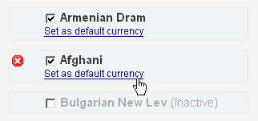
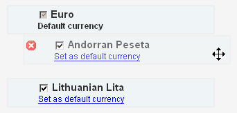
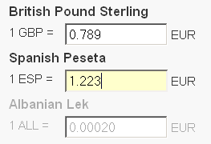

With LC you can localise your e-store and provide the catalog info in visitor's home currency. That is, you can add (set) multiple currencies and allow users to switch between currencies to view the prices of products and conclude payments in the currency they prefer. For that you have to set (add) appropriate currencies.
LC allows you to conduct transactions in any currency. That is, your customers are able to view products and conclude payments in the currency they prefer. You can pre-set as many currencies as necessary.
To add a new currency simply click Add currency and choose a currency from the pulldown menu followed by (the) ADD button.
The default currency is used as a main currency of your system, that is... For instance, all the other currency rates are calculated in respect with the default currency. To change the default currency click the Set as default link under the currency name.
To adjust rates of your (active) currencies click on the Adjust Rates tab to proceed to manual rates setting.
To configure automatic currency updater go to Options section.
All the currencies are disabled by default, to enable a currency click it's checkbox by the currency name. Clear the mark to set it inactive.
Sorting currencies determines the way all your system's active currencies will be displayed in the users currency switching menu. To set an appropriate currency order, click on the currency and drag it up or down.
To delete a currency, move your mouse over the currency and click "delete" icon on the left.
To delete a currency, move your mouse over the currency and click delete icon on the left.

To set rates simply enter currency's value in the appropriate field. For instance, if one Spanish Peseta is worth 1.223 Euros, enter this value and click Save to set the rates.
Note: rates have to be calculated in relation to the default currency.
See Automatic Adjust for keeping your rates up-to-date.
To keep your currency rates up-to-date you have to enable automatic currency updaters. To do that: